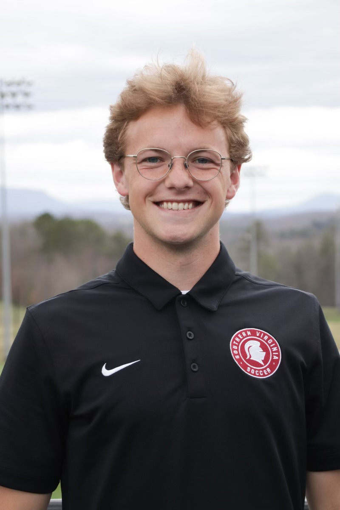
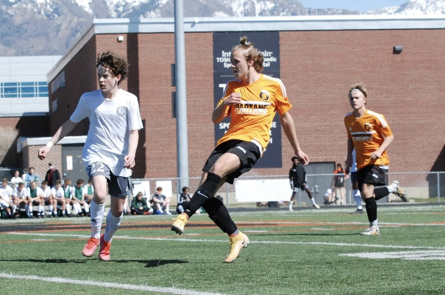

Hello, My name Landon Stock! Here is some introductory details about who I am so you can get to know more about me!
1. Oldest Sibling: As the oldest sibling, I know how to organize family outings, and to mediate fights between my sisters. I strive to be the example and immitate the example my father sets.
2. Soccer Player: Soccer isn't just a game for me, it's a passion that fuels my competitive spirit. I love to win, but a big part of winning is being respectful and working hard. So I try to embody those each time I play.
3. College Student: Juggling college coursework and extracurricular activities isn't easy, but I thrive on the challenge. Whether i'm taking an exam, collaborating on a group project, i'm fully engaged in the college experience, eager to learn new things and broaden your horizons.
4. Hard Worker: From balancing part-time jobs to tackling challenging assignments, i'm no stranger to hard work. Whether i'm working on my assignments or on the field, I like to approach each task with determination and dedication, knowing that it will pay off in the long run.
5. Dog Owner: My furry friend is more than just a pet they're a beloved member of my family. Whether we are going for a run together in the park, cuddling up on the couch for a movie marathon, the bond we share is unbreakable, filled with love, loyalty, and endless tail wags.
1. Oldest Sibling: As the oldest sibling, I know how to organize family outings, and to mediate fights between my sisters. I strive to be the example and immitate the example my father sets.
2. Soccer Player: Soccer isn't just a game for me, it's a passion that fuels my competitive spirit. I love to win, but a big part of winning is being respectful and working hard. So I try to embody those each time I play.
3. College Student: Juggling college coursework and extracurricular activities isn't easy, but I thrive on the challenge. Whether i'm taking an exam, collaborating on a group project, i'm fully engaged in the college experience, eager to learn new things and broaden your horizons.
4. Hard Worker: From balancing part-time jobs to tackling challenging assignments, i'm no stranger to hard work. Whether i'm working on my assignments or on the field, I like to approach each task with determination and dedication, knowing that it will pay off in the long run.
5. Dog Owner: My furry friend is more than just a pet they're a beloved member of my family. Whether we are going for a run together in the park, cuddling up on the couch for a movie marathon, the bond we share is unbreakable, filled with love, loyalty, and endless tail wags.
Full-time Missionary for the Church of Jesus Christ of Latter-day Saints: As a missionary we uphold high standards of conduct and act in a profesinal manner. We learn how to teach and interact with all sorts of people from children to adults.
Roofer: This was a great way to learn how to work hard and efficent because if we were slow at doing our jobs we were stuck on the roof for longer.
Fast Food: Chick-fil-A and ZUPAS. Where I was able to learn alot about working with a staff. I was also able to learn about customer service at these job locations.
State Soccer Refferee: I have been a refferee for 8 years now. I am consistantly used as the center refferee for my ability to handle high tensity situations and be proactive in keeping the players safe and having a good time.
Warehouse packaging: I worked here for about 3-4 months helping package school learning supplies for low-income families so they could have learning supplies at home.
Content Creator: For 7 months I worked as a content creator for my church. We would shoot anything from informitive videos about our beleifs all the way to music videos. Our content averaged between 50,000-80,000 veiws while I was in the position.
Roofer: This was a great way to learn how to work hard and efficent because if we were slow at doing our jobs we were stuck on the roof for longer.
Fast Food: Chick-fil-A and ZUPAS. Where I was able to learn alot about working with a staff. I was also able to learn about customer service at these job locations.
State Soccer Refferee: I have been a refferee for 8 years now. I am consistantly used as the center refferee for my ability to handle high tensity situations and be proactive in keeping the players safe and having a good time.
Warehouse packaging: I worked here for about 3-4 months helping package school learning supplies for low-income families so they could have learning supplies at home.
Content Creator: For 7 months I worked as a content creator for my church. We would shoot anything from informitive videos about our beleifs all the way to music videos. Our content averaged between 50,000-80,000 veiws while I was in the position.
First semester Freshman at Southern Virgina University. Looking into doing a double major of Philosphy and Computer Science.
Highschool graduate with 3.5 GPA.
I have recived an Eagle Scout award, which included learning about many different topics and doing tasks to prove that we are learning.
I am scuba certified and have gone on 3 open water dives.
I have learned a second language, Romanian, and use it to translate and communicate. I also studied spanish for 3 years in highschool but do not use it currently.
Have done a year worth of training on cars when I was in highschool.
Highschool graduate with 3.5 GPA.
I have recived an Eagle Scout award, which included learning about many different topics and doing tasks to prove that we are learning.
I am scuba certified and have gone on 3 open water dives.
I have learned a second language, Romanian, and use it to translate and communicate. I also studied spanish for 3 years in highschool but do not use it currently.
Have done a year worth of training on cars when I was in highschool.
I enjoy a diverse range of hobbies that fuel my passion for adventure, creativity, and relaxation. Soccer satisfies my competitive spirit and love for teamwork. Cooking lets me experiment with flavors and share delicious meals with loved ones. Photography allows me to capture fleeting moments and express my artistic vision. Boating brings a sense of freedom and tranquility on the water. Camping and hiking immerse me in nature, providing both challenge and serenity. Woodworking is my outlet for craftsmanship and creating tangible, lasting pieces. Hammocking offers the perfect excuse to unwind and enjoy the great outdoors. Board games spark laughter and friendly competition during gatherings. Lastly, video games provide immersive experiences and a chance to escape reality for a while. Each hobby fulfills a different aspect of my personality, keeping life exciting and fulfilling.
Payden Pemberton: Coach for college soccer team. (111) 222-3333
Charles Rucker: Mission President for two year prosylting mission. (444) 555-6666
Carl Stock: Father and coach for club soccer teams. (101) 111-1212
Bryce Gessell: Advisor at Southern Virgina University. (131) 141-1515
Taylor Work: Manager at Chick-fil-A. (161) 171-1818
Jodi Mismash: State Refferee assigner.(191) 202-2121
Charles Rucker: Mission President for two year prosylting mission. (444) 555-6666
Carl Stock: Father and coach for club soccer teams. (101) 111-1212
Bryce Gessell: Advisor at Southern Virgina University. (131) 141-1515
Taylor Work: Manager at Chick-fil-A. (161) 171-1818
Jodi Mismash: State Refferee assigner.(191) 202-2121
Favorite color: Easily I am going to go with orange. It was my first soccer teams colors and then same with my first competive team and followed by my highschool team. We have an orange boat and you can find me around campus with and orange waterbottle and airpods case.
Favorite Song: One Man Band by Old Dominion. I am a big country music fan and this song brings back fond memories I use to share with loved ones.
Favorite Ice-cream: I love myself a good scoop of chocolate Ice-cream on a waffle cone. If we are trying to get a little crazy I will throw in a scoop of orange sherbet.
Favorite Scripture: Alma 37:37. This scripture was show to me by someone dear and it has always been my go to because it talks about prayer with our Father In Heaven.
Favorite Movie: I love "The Princess Bride" and "Sandlot" my dad showed these to me when I was younger and they have always felt like classics to me.
Favorite Song: One Man Band by Old Dominion. I am a big country music fan and this song brings back fond memories I use to share with loved ones.
Favorite Ice-cream: I love myself a good scoop of chocolate Ice-cream on a waffle cone. If we are trying to get a little crazy I will throw in a scoop of orange sherbet.
Favorite Scripture: Alma 37:37. This scripture was show to me by someone dear and it has always been my go to because it talks about prayer with our Father In Heaven.
Favorite Movie: I love "The Princess Bride" and "Sandlot" my dad showed these to me when I was younger and they have always felt like classics to me.


